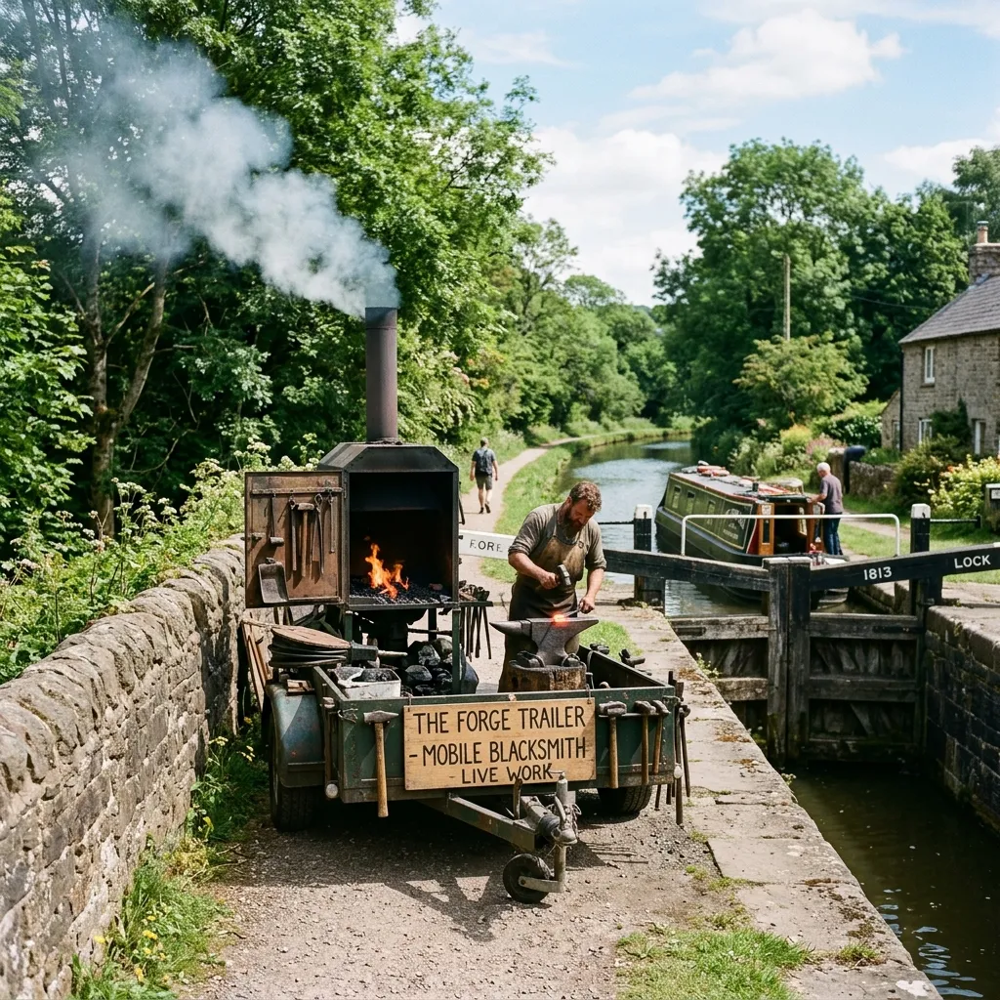

The Waterway Millwright Retainer Model
Shared towpath forge trailers, itinerant master blacksmiths, and non-profit lock preservation governance.
Guild Governance: How Retainer Shares Function
Our cooperative model fractionalizes the cost of retaining specialized heavy-forge equipment and master blacksmiths.
Annual Lock Audit
Our millwrights conduct a full physical inspection of your trust's lock flights, cataloging the condition of all ironwork and bronze gears to preempt failures.
Hardware Allocation
Trusts purchase an annual block of blacksmith hours and scrap iron credits. These funds maintain the central equipment pool and secure your priority rank.
Mobile Forge Dispatch
When a repair is scheduled or an emergency arises, our self-contained towpath forge is deployed directly to your lock chamber, eliminating heavy transport costs.
Emergency Coverage
If a paddle gear seizes mid-season, guild members receive guaranteed 48-hour response times to keep the canal pound navigable during peak traffic.
The Lock & Sluice Guild operates as a non-profit cooperative. Any unused fractional blacksmith hours remaining at the end of the fiscal year are not lost; they automatically roll over into your trust's scrap iron trade credits. This ensures that every pound spent directly contributes to the physical restoration of your waterway's historical infrastructure.
Mobile Towpath Forge Capabilities
Self-contained blacksmithing power brought directly to remote lock flights without damaging historic stone towpaths.
Transporting tons of oak and seized ironwork across rural counties is a logistical nightmare. Our custom-built mobile forge trailers are engineered with a narrow track width specifically designed to navigate historic canal towpaths, allowing our millwrights to pull directly alongside remote lock chambers.
This direct access allows us to heat, shape, and hot-rivet iron straps in real-time, custom-fitting the hardware to the exact warp and wear of the original timber gates without endless back-and-forth trips to a static workshop.
Waterway Millwright & Retainer Enquiries
Addressing common technical questions regarding historic listings and cooperative membership.
Can a seized lock paddle mechanism be repaired on-site without de-watering the canal?
How long does a hand-forged bronze rack-and-pinion gear last under daily use?
What is the difference between a Guild Retainer and a standard contractor quote?
Do you handle emergency lock gate strap snaps during peak summer navigation?
Can non-member canal trusts purchase spare parts from the forge inventory?
Verified Canal Trust Reports
Endorsements from respected waterway managers regarding our itinerant forge model.
"When the lower gate rack shattered mid-July, we faced shutting the flight for a month. The Lock & Sluice trailer was on the towpath by Tuesday, and they hand-filed a new bronze pinion before sunset."
"The speed of their mobile towpath forge deployment is unmatched. Their hot-riveted ironwork passed our Historic England conservation audit without a single point of friction."
Apply for Guild Retainer Membership
Secure priority access to our mobile forge and master blacksmith hours.
Please note: To maintain our strict 48-hour emergency response guarantees, annual member intake is strictly capped at 20 navigation trusts per region.